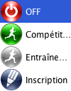

Barre d’outils

La barre d’outils présente les actions globales.
- Nouveau/Ouvrir affiche l’assistant
- Sauver enregistre les données sur disque. Les données sont aussi sauvegardées automatiquement quand vous quittez l’application et à intervalles réguliers
- Vérifier OK|PM recalcule le statut et le temps officiel de tous les coureurs OK ou MP (à utiliser quand un problème affectant tous les coureurs a été détecté et corrigé) Attention, cette action annule les modifications manuelles.
Les deux boutons suivant gèrent le mode Live.

La barre d’outils sert aussi à contrôler le comportement de Geco pendant la lecture des puces.

Le bouton de gauche contrôle l’auto-impression des splits quand un coureur lit sa puce. Celui de droite contrôle le boîtier maître.
Un éclair indique que l’impression automatique des splits est activée. Au démarrage de la lecture, Geco demande s’il faut activer l’impression automatique.
Le bouton ci-dessous indique que la lecture est désactivée.
Cliquez pour ouvrir le menu déroulant avec les différents modes de lecture des puces.

Sélectionnez votre mode. Tant que Geco est en train d’initialiser le boîtier maître, le bouton indique Démarrage…. Les erreurs éventuelles sont affichées dans la barre de statut.

Le bouton ci-dessous indique que le boîtier est prêt et accepte la lecture des puces en mode Compétition. Cliquez à nouveau pour ouvrir le menu déroulant et basculer entre les différents modes.